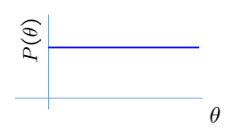

Given a prior knowledge to estimate the model.
Bayesian Learning: \[P(\theta|\mathcal{D}) = \frac{P(\mathcal{D}|\theta)P(\theta)}{P(\mathcal{D})}\] or equivalently \[P(\theta|\mathcal{D}) \propto P(\mathcal{D}|\theta)P(\theta)\] Likelihood measures the fitness between data and parameters, Prior is the knowledge how possible the parameters to be.
Prior information encoded as a distribution over possible values of parameter.
Using the Bayes rule to get an updated posterior distribution over parameters.
Represents expert knowledge (philosophical approach)
Simple posterior form (engineer’s approach)
Simple distribution.

Closed-form representation of posterior
prior and posterior have the same algebraic form as a function of parameters
Bernoulli Example: (Binomial’s conjugate prior is Beta distribution)
Likelihood in Bernoulli model: \(P(D|\theta)=\theta^{\alpha_1}(1-\theta)^{\alpha_2}\)
Prior is Beta distribution: \(P(\theta)=\frac{\theta^{\beta_1-1}(1-\theta)^{\beta_2-1}}{B(\beta_1,\beta_2)} \sim Beta(\beta_1,\beta_2)\)
Posterior is also Beta distribution: \(P(\theta|D)\sim Beta(\beta_1+\alpha_1,\beta_2+\alpha_2)\)
Multinomial example: (Multinomial’s conjugate prior is Dirichelet distribution)
Likelihood is Multinomial(\(\theta=\{\theta_1,\dots,\theta_k\}\)), \(P(D|\theta)=\prod_{i=1}^{k}\theta_i^{\alpha_i}\), \(\alpha_i\in\{0,1\}\) is the data \(D\), \(\sum_{i=1}^{k}\theta_i =1\).
Prior is Dirichlet distribution: \(P(\theta)=\frac{\prod_{i=1}^{k}\theta_i^{\beta_i-1}}{B(\beta_1,\dots,\beta_k)} \sim Dirichlet(\beta_1,\dots,\beta_k)\)
Posterior is also dirichlet distribution: \(P(\theta|D) \sim Dirichlet(\beta_1+\alpha_1,\dots,\beta_k+\alpha_k)\)
As we get more samples, effect of prior is “washed out”
Choose \(\theta\) that maximizes a posterior probability: \(\hat{\theta}_{MAP}=\arg\max_\theta{P(\theta|D)}\)
\[\begin{array}{rcl} \hat{\theta}_{MAP} & = & \arg\max_\theta{P(\theta|D)} \\ & = & \arg\max_\theta{P(D|\theta)P(\theta)} \end{array}\]
Bernoulli example:
\[\begin{array}{rcl} P(\theta|D) & \sim & Beta(\beta_1+\alpha_1,\beta_2+\beta_2) \\ \hat{\theta}_{MAP} & = & \frac{\alpha_1+\beta_1-1}{\alpha_1+\beta_1+\alpha_2+\beta_2-2} \end{array}\]
MLE: Choose value that maximizes the probability of observed data
MAP: Choose value that is mot probable given observed data and prior belief
When prior is a uniform distribution, MLE=MAP.
Conjugate priors
Gaussian prior: \[P(\mu|\eta,\lambda)=\frac{1}{\lambda\sqrt{2\pi}}\exp(-\frac{(\mu-\eta)^2}{2\lambda^2})=\mathcal{N}(\eta,\lambda)\]
Variance: Wishart Distribution1
MAP for Gasussian Mean:
\(\hat{\mu}_{MLE}=\frac{1}{n}\sum_{i=1}^{n}x_i\)
\(\hat{\mu}_{MAP}=\frac{\frac{1}{\sigma^2}\sum_{i=1}^{n}x_i+\frac{\eta}{\lambda^2}}{\frac{n}{\sigma^2}+\frac{1}{\lambda^2}}\)
MLE: \[\max_\theta\log P(D|\theta)\]
Constrained MLE: \[\max _\theta\log P(D|\theta)~~s.t.~\mathcal{R}(\theta)\leq C\]
When \(\mathcal{R}\) is convex, constrained MLE is equivalent to regularized MLE (lagrange multiplier2): \[\max_\theta\{\log P(D|\theta)+\lambda\mathcal{R}(\theta)\}\]
The MAP estimator can be seen to be a special case by simply setting: \[\lambda\mathcal{R}(\theta)=\log P(\theta)\]